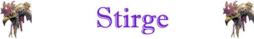

Risucchio dello Stigeo;
Attacco Veloce Inferiore;
Robustezza Superiore (+3 punti ferita);

|
|
Ambiente/Habitat | Foreste / Caverne e Sotterranei Naturali |
| Frequenza | Uncommon / Rare | |
| Organizzazione | Stormo | |
| Periodo di Attività | Qualsiasi | |
| Dieta | Carnivoro (Sangue) | |
| Intelligenza | Animal Intelligence (1) | |
| Punti Combattimento | Nessuno | |
| Tesoro | Nessuno | |
| Allineamento Dominante | Neutrale | |
| Numero di Apparizione | 1d12: (1-5) 3d3+1 (6-9) 2d6+3 (10-12) 3d6+2 | |
| Classe Armatura | 4 [10 base, 2 corazza, -4 destrezza] / 1 proiettili / 6 avvinghiato | |
| Movimento | 2 esagoni / volare 10 esagoni | |
| Dadi Vita | 2 (+3 punti ferita) | |
| Thac0 | 18 | |
| Numero di Attacchi | Becco | |
| Danni | 1d3 (punta) | |
| Poteri Offensivi | Istinto Predatorio; Risucchio dello Stigeo; Attacco Veloce Inferiore; |
|
| Poteri Difensivi | Volo Irregolare; Robustezza Superiore (+3 punti ferita); |
|
| Poteri Generici | Morale di Gruppo; | |
| Vulnerabilità | Nessuna | |
| Resistenza alla Magia | Nessuna | |
| Sensi | Infravisione (30 metri); Sensi Superiori | |
| Dimensioni | Tiny (1/2 m. lunghezza del corpo) | |
| Morale | Average (10) | |
| Valore in Punti Esperienza | 185 |
|
TIRI SALVEZZA DELLA CREATURA |
|||||||
| CORAGGIO | ENERGIA VITALE | MAGIA | MALATTIA | MENTE | RIFLESSI | ROBUSTEZZA | VELENO |
| 0 | 0 | 0 | 0 | 0 | +10% | 0 | 0 |
| 52 | 61 | 65 | 51 | 63 | 42 | 66 | 58 |
Descrizione
Questa creatura dall'aspetto ripugnante sembra un incrocio tra un pipistrello e una zanzara gigante. Possiede quattro ali a membrana da pipistrello, un piccolo corpo peloso, quattro zampe articolate che terminano con chele affilate e un lungo becco appuntito. Il colore di un uccello varia da rosso ruggine a marrone rossiccio, con la pancia e la superficie interna delle ali giallo sporco. Il corpo di questo uccello è lungo circa 50 cm, con un'apertura alare di più o meno un metro. Pesa approssimativamente 2 libbre.
Combat
Un uccello stigeo attacca atterrando su una vittima, trovando un punto vulnerabile e ficcando il suo becco acuminato nella carne al fine di succhiare il sangue della stessa. Quando possibile più uccelli stigei attaccano la stessa preda per privarla del fluido vitale nel più breve tempo possibile. Ciò non dipende da una tecnica di assistenza comune utilizzata da altre creature (si pensi ad un branco di lupi) ma dalla diretta percezione della perdita di sangue che stimola i sensi di questi esseri. Una volta che l'uccello stigeo si è "attaccato" ad una creatura lo stesso ignorerà qualsiasi cosa fino a che non sarà pieno del sangue della vittima.
ISTINTO PREDATORIO (Moderate Special Ability): La creatura possiede un forte istinto predatorio, per tale motivo costei riceve un bonus costante di +1 ai suoi tiri per colpire.
RISUCCHIO
DELLO STIGEO
(Superior Special
Ability): Quando questa creatura
colpisce con il becco un avversario di dimensioni minime Small, si attacca alla vittima con le quattro zampe
uncinate e succhia il sangue della vittima (l'uccello stigeo non effettuerà
questo attacco contro creature non dotate di sangue commestibile).
Fino a che l'uccello stigeo resterà
attaccato alla sua vittima si applicheranno i seguenti modificatori:
* L'uccello stigeo si considererà occupare la medesima posizione della vittima.
* L'uccello stigeo perderà due punti di destrezza dalla propria classe armatura,
considerandosi avere AC 6 [10 base,
2 corazza, -2 destrezza].
* L'uccello stigeo otterrà una penalità di +10% a tutti i tiri salvezza su
riflessi.
A seconda delle dimensioni della
vittima solo un determinato numero di uccelli stigei potrà attaccarsi alla
stessa come indicato nella seguente tabella:
Small: 1 uccello stigeo
Medium: 2 uccelli stigei
Large: 3 uccelli stigei
Huge e Gargantuan: 3 uccelli stigei per posizione occupata dal corpo della
creatura.
Si osservi che qualora da una
creatura risultino attaccati il numero massimo di uccelli stigei la stessa
si considererà a tutti gli effetti
come incapacitata (le creature Huge
e Gargantuan non subiscono questa penalità).
A partire da round successivo a quello nel quale l'uccello stigeo si è attaccato
alla vittima lo stesso succhierà automaticamente
1d4 punti ferita di sangue alla fine di ogni round senza che sia richiesto
alcun tiro per colpire.
Quando ha bevuto 12 punti ferita di sangue si stacca dalla vittima e scappa via.
Reazione della vittima contro
l'uccello stigeo: La vittima sulla quale è attaccato l'uccello può attaccarlo solo con armi da
corpo a corpo, con una penalità di –1 se usa armi small, di –2 se usa armi medium,
di -3 se usa armi large ed un'ulteriore penalità
di -2 se utilizza armi impugnandole a due mani. La vittima, inoltre, può provare
a staccarsi l'uccello stigeo di dosso con la forza. Si tratta di un'azione
complessa della durata dell'intero round che fa accumulare un punto fatica e
richiede entrambe le mani libere. Alla fine del round (prima che l'uccello possa
succhiare il sangue) la vittima dovrà, quindi, superare un tiro salvezza su
robustezza modificato dalla forza in luogo della costituzione. Se il tiro
salvezza riesce l'uccello stigeo sarà stato strappato via e potrà occupare una
qualsiasi posizione libera adiacente alla vittima. Strappare così un uccello
stigeo provoca però 1d3+1d4 danni da taglio alla vittima per la lacerazione
delle carni.
Attacchi di altre creature
sull'uccello stigeo: Le altre creature possono
attaccare l'uccello ma per farlo dovranno superare un tiro salvezza su riflessi
per ogni attacco (con –5% di penalità se usano armi medium, -10% se usano armi large,
un'ulteriore penalità di -5% se
utilizzano armi impugnandole a due mani; -20% se si usano armi da tiro o da lancio od effetti assimilabili,
-10% quando utilizzano il colpo di combattimento Precisione nella Mira). Se il tiro
salvezza è effettuato con successo, l’attacco punterà solo l'uccello (che poi
dovrà essere regolarmente colpito), se invece il tiro salvezza fallisce,
l'attacco punterà la vittima che subirà il relativo tiro per colpire e gli
eventuali danni. Se la vittima resta, a partire dall'inizio del round,
perfettamente immobile (considerandosi paralizzata anche in caso sia poi
colpita dall'attacco amico) chi effettua attacca l'uccello riceve un bonus di
+20% al suddetto tiro salvezza (l'uccello manterrà comunque la sua classe
armatura). Si noti, inoltre, che qualunque effetto (normale o magico) che possa
essere diretto su una creatura puntato sull'uccello stigeo
provocherà la metà dei danni (per eccesso all'uccello stigeo) e l'altra metà
alla vittima (sia l'uccello che la vittima potranno effettuare il loro
individuale tiro salvezza).
Altre regole:
L'uccello non si staccherà prima di essere morto o prima di aver
bevuto il sangue desiderato. Deve aggiungersi, però, che l'uccello stigeo può
essere allontanato dal fuoco. Ogni volta che lo stesso subisce un danno da fuoco
mentre è avvinghiato ad una vittima lo stesso dovrà superare una prova di morale
o fuggire via appena possibile.
ATTACCO VELOCE INFERIORE (Least Special Ability): Questa creatura è in grado di effettuare i propri attacchi più velocemente del normale. Costei quindi riceve un bonus all'iniziativa dei propri attacchi pari a - 1, fermo restando il limite minimo di +1 al fattore iniziativa del proprio attacco. Inoltre, qualora i tiri di iniziativa sugli attacchi effettuati dalla creatura abbiano un risultato superiore, questi saranno considerati pari a 9.
VOLO IRREGOLARE (Moderate Special Ability): L'incredibile manovrabilità in volo di questa creatura unita al suo modo di volare irregolare caratterizzato da continue manovre e virate improvvise impone a tutti gli avversari desiderino colpirla con attacchi a distanza (armi da tiro, da lancio od effetti equivalenti) un malus di -3 al proprio tiro per colpire.
ROBUSTEZZA SUPERIORE (Typical Ability): Il fisico della creatura è estremamente robusto. Ciò conferisce alla stessa una robustezza superiore che gli garantisce 3 punti ferita supplementari.
MORALE DI GRUPPO (Least Special Ability): Quando questa creatura è in gruppo riceve un bonus di +4 a tutte le prove di morale. Questo beneficio permane fino a che sono presenti, nel corso del combattimento, almeno la metà delle creature facenti parti del gruppo incontrato.
Habitat/Society
Gli uccelli stigei tendono ad avvisare mediante un verso stridulo udibile chiaramente fino a 50 metri di distanza il resto dello stormo della presenza di possibili pericoli o prede. Gli uccelli stigei vivono normalmente tra i cinque ed i sei anni.
Ecology
Gli uccelli stigei sono creature simili a pipistrelli che si nutrono del sangue
degli altri esseri viventi. Mentre uno solo di essi non è che un piccolo
pericolo per la maggior parte degli avventurieri, un stormo di uccelli stigei
può risultare una minaccia formidabile. Le ferite prodotte dagli uccelli stigei
sono molto particolari, chi conosce o ha già esaminato le ferite di queste
creature può, utilizzando la competenza appropriata (ad esempio Autopsy),
determinare facilmente la loro origine. Nonostante la preda principale di queste
creature sia rappresentata dagli erbivori, che possono opporre una resistenza
minore, la preda favorita degli uccelli stigei sono le creature onnivore che
hanno un sangue più ricco e gustoso. Per tale motivo costoro non esiteranno ad
aggredire umani, semi-umani ed umanoidi od i loro insediamenti. Nonostante non
siano esseri migratori ma stanziali, soliti dimorare nella medesima grotta
naturale come i pipistrelli, in alcuni casi, un piccolo stormi di questi uccelli
è solito seguire le mandrie degli erbivori e le altre loro prede quando esse
migrano. Il guano degli uccelli stigei è di colore porpora scuro e tende ad
essere più liquido che solido. Questo guano rappresenta un validissimo
fertilizzante richiesto come concime nella produzione di piante speciali.
Disponendo di contenitori adeguati (in grado di contenere liquidi) in una tana
di uccelli stigei possono trovarsi fino ad 1d3 dosi (da 1 libbra) di questo
guano per uccello che abita la caverna. Ogni dose di questo guano può essere
venduta (ad un acquirente interessato) ad un valore medio di mercato pari a 5
monete d'oro.
Mystical Resource Sourge (Becco) Quantità: 1, Presenza 10% - Scuola di Magia: Enchantment - Qualità della Risorsa: Common.